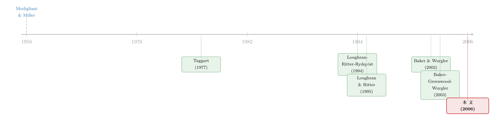

25 万亿美元都去哪了？——一张关于「在哪里融资」的世界地图
本文读的是 Henderson, Jegadeesh & Weisbach (2006, JFE)：1990–2001 年间全球企业一共募集了约 $25.3 万亿美元的新资本，其中 $4.9 万亿来自境外；跨境发行里债远比股普遍（债占境外发行的 87%，股仅 9%）；而且无论发债还是发股，企业都在择时——市场高估时发股、利率上行前发债。
1 一个被忽略的问题：钱在「哪里」融，重要吗？
我们对公司金融里「发什么」这个问题已经研究了几十年。该发债还是发股？该发短债还是长债？该发普通股还是可转债？这些问题背后，是一整套关于税盾、信息不对称、代理成本的精致理论。
但有一个问题，长期以来几乎没人正面回答过：钱，到底该在哪里融？
一家欧洲公司，今天既可以在本国发债，也可以跑去美国发，还可以去日本发。金融市场全球化之后，企业手里多出来的不只是「证券类型」这一个维度的自由度，还多出来了「发行地点」这第二个维度。可奇怪的是，关于第一个维度我们汗牛充栋，关于第二个维度却几乎是一片空白。本文作者一上来就抛出一连串问题：全世界的公司到底怎么融资？有多少依赖本国资本、又有多少跑到国外去？是不是有些国家比别人更依赖外资？债，是不是比股更容易「出海」？利率、估值这些市场条件，又如何影响「发什么、去哪发」的选择？
按 Modigliani & Miller（1958）的逻辑，在一个没有摩擦的世界里，不仅「发什么证券」无关紧要，「在哪里发」同样无关紧要。可现实里有税、有摩擦、有不完全整合的资本市场——于是「去哪发」就成了一个真问题。这篇 2006 年的论文，做的就是把这张世界地图第一次画出来。
这是一篇「先描述、后检验」的论文。前半部分几乎是纯描述性的：它给出一组关于全球跨境融资的「典型事实」（stylized facts）。后半部分才转向假设检验：企业是不是在择时（market timing）发行证券。读它的乐趣，恰恰在于那些数字本身。
2 数据：把全世界的新发行装进一个数据库
要回答上面的问题，首先得有一个覆盖全球的、交易层级的新发行数据库。作者用的是 SDC（Securities Data Corporation）的新发行数据库——它从 1990 年起记录全球普通股、优先股，以及原始期限大于一年的债券的发行明细。
SDC 把数据按区域组织：美国、国际（大部分跨境发行）、亚太、澳新、加拿大、欧洲大陆、印度次大陆、日本、韩国、拉美、英国……对有信息披露要求的国家（如美国靠 SEC filings、澳新靠澳洲证券委员会的备案），数据相对干净；对没有 SEC 式监管机构的地区，数据来源就更「江湖」——新闻通讯社、行业刊物、投行的专有调查等等。
作者很坦白地提醒：SDC 对不同国家的覆盖完整度不一样。靠法定备案收集的国家更全，靠多源拼凑的国家更糙。这种覆盖差异会给数据引入噪声——但请注意它的方向：噪声降低了择时检验的功效，因此是把检验「往不利于发现择时」的方向偏，而不是反过来。换句话说，如果在这样有噪声的数据里还能找到择时，那证据反而更可信。
最终样本是 195,375 笔证券发行，覆盖 1990–2001 年；由于部分区域库（如澳新）要到 1991 年才起算，正式的统计检验都用 1991–2001 的数据。市值与 GDP 来自世界银行的 Global Market Information 与 WDI；通胀来自 IMF 的 IFS；利率互换来自 Datastream；股市回报用 Datastream 的「total return」指数。
3 第一组事实：债，才是出海的主角
先说总量。1990–2001 这十二年里，全球企业通过公开发行募集了约 $26 万亿美元的新资本，其中跨境发行高达 $4.9 万亿。资本募集的规模在样本期内翻了约四倍——从 1991 年的 $947.5 十亿增长到 2001 年的 $3.62 万亿。
接着，一个自然的问题是：这些钱里，债和股各占多少？答案出人意料地悬殊。不可转换债券（nonconvertible bonds）是企业募资最主要的工具，整个样本期发了超过 $20.81 万亿，约占全部募资的 82%；相比之下，股权只募了 $3.6 万亿，约 14%。
当然，债和股的规模不能直接比——债有到期日，企业到期要滚动（roll over），所以一笔发债里有一部分只是借新还旧，真正的「新资本」只是其中一块。作者在附录里做了个粗略调整：假设外部资本的增长率在 5% 到 10% 之间，那么这期间真正的新增债务大约在 $5.6 到 $7.4 万亿之间。即便如此，债依然构成了新增外部资本里更大的那一块——这一点和 Rajan & Zingales（1995）在更早样本期的发现一致：除法国外的 G7 国家，债都提供了大部分新融资。
然后是本文最核心的那个反差：债比股更爱出海。
样本期内，约 20.24%（约 $4.2 万亿）的公司债发行在发行人母国之外完成，而公开股权只有 12.2%（约 $0.435 万亿）在境外完成。如果只看「国际市场」上发行的证券构成，债占了 87%，股仅占 9%。更细一层看：长期债（期限 > 5 年）有 23.4% 在境外发行，短期债只有 16.2%——很可能是因为出海发行有固定成本，期限越长越值得为这笔固定成本「出趟门」。
这个反差为什么「反直觉」？因为文献里讲了一大堆股权跨境的好处。Karolyi（1998）说跨境发股能提高发行人在海外的能见度；Coffee（1999）、Reese & Weisbach（2002）则强调，到美国这种监管严、披露高的市场去发股，等于向全世界「绑定」（bonding）了一个更高的治理标准。可这些好处，跨境发债统统享受不到——债不怎么增加能见度，也不要求发行人遵守发行国的披露标准。既然如此，为什么出海的反而是债？
4 真正关键的一步：跨境发债自有它的逻辑
这就是论文叙事里最关键的转折。作者一口气给出了跨境发债独有的四个好处，恰恰是跨境发股给不了的：
第一，对冲汇率风险。一家在海外有大量外币收入的公司，可以通过在那个币种里发债来对冲它的汇率敞口。股权做不到这件事——股票不像债券那样承诺固定的周期性现金流，所以不是对冲现金流风险的合适工具。
第二，税务考量。利息能否抵扣、在哪里抵扣，取决于收入与利息支付的所在地。从税的角度，「在哪个国家发债」会影响利息抵扣的「分摊」（allocation）；因此一家收入大量来自海外的公司，倾向于在产生收入的国家发债。
第三，利率差是直接可观测的。各国利率差摆在明面上，企业完全可以试图去利率最低的国家发债——而这一点能不能做到，正是论文第 5 节要实证检验的问题。
第四，信息不对称。债券价格对公司价值信息远没有股价那么敏感，知情投资者更愿意去交易股票而非债券；外国投资者通常在信息上不占优势，于是他们更乐意接手「信息不敏感」的债，而不是「信息敏感」的股。
有意思的是，Graham & Harvey（2001）对 CFO 的问卷调查给这套逻辑排了个序：发外债最重要的动机是对冲，其次是税务，再次是利率择时——和上面的故事高度吻合。
作者也很诚实地留了个「无聊解释」的口子：会不会跨境债占比高，只是因为大公司既更爱跨境融资、又在国内本就更爱发债，于是跨境债多只是公司规模的机械结果？这是一个需要被排除的竞争性假说——把它摆在台面上，是这篇论文严谨的地方。
关于「债该说哪国话」这件事，本博客另有一篇可以对照着读：《你的债，说哪国话？——大公司借钱的「货币选择」，藏在它的销售版图里》，那篇正好把「外币收入决定外币发债」这条对冲逻辑做成了干净的实证。
此外还有几个跨国格局上的规律：企业被流动性吸引——美国和英国是跨境股权最受欢迎的两个目的地；本国股市越不发达（illiquid）的国家，企业把越大比例的股权拿到国外去发。地理临近也重要——企业更愿意去地理上接近的国家发证券。欧洲的债券市场对外国发行人比欧洲的股权市场更有吸引力；美加是不可转换优先股的最大发行方，而可转债在欧洲很流行。
5 第二组事实：他们在择时吗？
描述完「在哪发」，论文转入它的检验部分：企业是不是在择时发行？
这里要先把识别逻辑讲清楚。择时检验本质上是一组预测回归（predictive regression）：如果企业真的在市场高估时发股，那么总量层面的股权发行就应该和未来的市场回报负相关——今天发股越多，未来回报越低。这正是 Baker & Wurgler（2002）在美国做过的事；本文把它搬到了国际舞台，看总量股权发行能否预测各国的市场回报。
预测回归是一类出了名「容易出错」的回归。当被解释变量（未来回报）和解释变量（发行量/估值代理）的创新项相关，且解释变量高度持续时，OLS 系数会有小样本偏误——这就是 Stambaugh（1999）刻画的偏误。作者因此援引了 Amihud & Hurvich（2004）的减偏估计方法来应对。读这一节时，心里要时刻装着这根弦：统计显著性在这里要打个折扣。
债这边的择时逻辑则不同。早期文献——Bosworth, Smith & Brill（1971）、White（1974）、Taggart（1977）——发现美国企业在利率低时更倾向于发债而非发股。但那些都是公司层面的研究。本文做了三件新事：一是把债与利率的关系放到总量层面看；二是同时看美国和国际；三是检验企业会不会跑到利率更低的国家去发债。更进一步，本文还检验了一个 Baker, Greenwood & Wurgler（2003）式的问题——企业在低利率环境下多发债的倾向，是否让它们能在利率上行之前抢先锁定更多长期债。（Baker 等人关注的是债务期限的择时，本文关注的是长期债的总量。）
主要的择时结论有三条：
- 第一，市场高估时企业更爱发股。具体来说，在股权发行高的时期之后，股市回报会异常地低。
- 第二，国际股权发行能预测发行所在国未来的市场回报——也就是说，企业不只在本国择时，跨境发股也择对了时候。
- 第三，企业会在利率上行之前抢发长期债——债务择时是真实存在的。
关于「公司一发证券、股价就反应」这件事到底是老板在择时还是市场在定价，本博客有一篇专门的讨论可以对照：《公司一发证券股价就跌：是老板在「择时」，还是市场在「定价」？》。而债务择时与利率的那条线，则可参见《央行没买你的债，你却也跟着发了债——一条「资本结构」的货币政策暗线》。
6 文献脉络：从 M&M 的「无关」到全球的「择时」
把这篇论文放回它所在的脉络里，故事其实很清晰。
起点是 Modigliani & Miller（1958）的无关性定理——在完美市场里，发什么、在哪发，都无关紧要。这个「无关」是整条文献的反面参照系：后来所有的研究，本质上都是在找「让它变得有关」的那些摩擦。
债务择时这一支起步很早：Bosworth, Smith & Brill（1971）、White（1974）、Taggart（1977）发现企业在低利率时偏好发债。股权择时这一支则要晚一些：Loughran & Ritter（1995）、Spiess & Affleck-Graves（1995）从公司层面记录下「企业在被高估时更爱发新股」；Loughran, Ritter & Rydqvist（1994）把 IPO 发行量和未来回报的负相关放到 14 个国家去看（10 个国家里为负，但都不显著）。真正把择时推到总量层面、并证明「股权份额能预测市场回报」的，是 Baker & Wurgler（2000, 2002）。债务期限择时的代表作则是 Baker, Greenwood & Wurgler（2003）。

本文站在哪里？它是这条脉络的国际化集大成者：把 Baker-Wurgler 式的总量股权择时检验搬到跨国样本，把 Taggart 式的债务-利率关系从公司层面提升到总量、并扩展到国际，同时第一次系统性地描述了「企业在哪里募集哪种资本」这张世界地图。它既补上了「发行地点」这个被忽略的维度，又把择时这件事从美国推向了全球。当然，正如 Stulz（1999）、Coffee（1999）、Reese & Weisbach（2002）、Pagano, Roell & Zechner（2002）所提示的，跨境融资背后还有风险分担、绑定治理、上市地理等一长串动机——本文明确把这些放到了「超出本文范围」之外，专注于择时这一条线。
7 评论与延伸（Q&A + 研究方向）
(a) 几个可能的疑问
Q：把债和股的「规模」直接放在一起比，公平吗？
不完全公平，作者自己也承认。债有到期日、要滚动，一笔发债里很大一部分只是借新还旧。所以
$20.81万亿的债远不是$20.81万亿的新资本——调整后真正的新增债务只有$5.6–$7.4万亿。比较「存量发行」和「净新增」是两回事，读这篇论文时要把这一层换算放在心里。
Q：「20% 的债出海、12% 的股出海」，会不会只是大公司的机械结果？
这正是作者主动提出的「无聊解释」：大公司既更爱跨境融资、又更爱发债，于是跨境债占比高可能只是规模的副产品，而非什么有趣的经济机制。论文用按国家/地区交叉的发行矩阵（附录 C）来部分回应——但严格说，要彻底排除规模的混淆，需要在公司层面控制规模后再比较，这是描述性证据的天然软肋。
Q：择时的预测回归结果可信吗？
要打折扣。预测回归在解释变量持续、且与回报创新相关时存在 Stambaugh（1999）偏误，作者用 Amihud & Hurvich（2004）的减偏方法来缓解，这是负责任的做法。但样本只有 1991–2001 这十一年、跨国数据又有覆盖噪声，统计功效本就有限——好在噪声是把检验往「不利于发现择时」的方向偏，所以「仍能找到」本身是有信息量的。
Q：为什么出海的偏偏是债，而不是文献夸了半天的股？
因为跨境发债有四个股给不了的好处：对冲外币现金流、利息抵扣的税务安排、直接可见的跨国利率差、以及债对信息不敏感（外国投资者更敢接）。文献过去几乎只盯着股权跨境的「能见度」和「绑定治理」，反而忽略了债这套更朴素、却更管用的逻辑。Graham & Harvey（2001）的 CFO 问卷把对冲排在第一，正好印证了这一点。
Q：这篇论文做了因果识别吗？
基本没有，也不该用因果的标准去苛求它。它前半是描述性的「典型事实」，后半是预测性的择时回归——回答的是「发行量能否预测回报/利率」，而不是「某个外生冲击导致了发行决策」。它的贡献在于把现象第一次量出来，为后续的因果研究铺好了事实地基。
Q：低利率时多发债，和「在利率上行前抢发长债」，是一回事吗？
不是。前者是「水平」上的——利率低就发债，是 Taggart（1977）那一代的发现；后者是「时机」上的——在利率即将上行之前就锁定长期债，需要企业对利率走势有某种预判能力，是 Baker, Greenwood & Wurgler（2003）式的更强主张。本文同时检验了这两层，且把后者落在长债总量而非债务期限上。
(b) 几个可能的研究问题与提案
1. 跨境公司债的「外资持有人」结构与二级市场流动性。 【经济故事】本文说债比股更爱出海，且外国投资者更愿接「信息不敏感」的债。那么一只在境外发行、被大量外资持有的公司债，它在二级市场的流动性、价格冲击、危机期的抛售行为，会和本土持有的债不一样吗？外资持有人到底是流动性的提供者还是放大器？ 【可行性】中。需要 SDC 的发行地数据 + TRACE/欧洲 ICMA 的成交数据 + 13F 或各国持仓库来拼出持有人国籍。识别上可借「指数纳入」或「合格境外投资者额度放开」这类外生冲击。难点是把「发行地」「上市地」「持有人国籍」三者干净地分开。
2. 利率择时的「事后检验」：抢发的长债，真的省了钱吗？ 【经济故事】本文证明企业在利率上行前多发长债。但一个更尖锐的问题是：这种择时事后真的降低了融资成本吗，还是只是事后看上去像择时（幸存者偏差）？ 【可行性】高。用发行层数据，把每笔长债的发行时点利率与发行后若干年的利率路径对比，构造「择时收益」。识别上要小心区分「真本事」和「运气」——可用样本外检验或安慰剂（随机重排发行时点）来卡。
3. 跨境发债的税务驱动：用一次跨国税改做自然实验。 【经济故事】本文说利息抵扣的「分摊」规则会左右企业在哪发债。如果某国突然改了利息抵扣的跨境规则（如美国关于利息费用 sourcing 的规则变动，参见正文提到的 Shaviro 2001），企业的跨境发债地点会不会随之迁移？ 【可行性】中。需要发行地数据 + 各国税法变动的时间线。识别可用 DiD：受规则影响 vs 不受影响的跨国企业。难点是税改往往伴随其他政策，需要找一次足够「干净」的规则变动。
4. 流动性吸引力的因果检验：本国股市流动性恶化，会把发行推到海外吗？ 【经济故事】本文相关性证据显示「本国股市越不流动，企业越爱去海外发股」。能不能找到一次外生的本国流动性冲击（如交易税开征、做市制度改革），看企业的跨境发行份额是否随之跳变？ 【可行性】中到高。许多国家有交易税开征/取消的明确时点，可作为本国流动性的外生冲击，用事件研究或 DiD 检验跨境发行份额的反应。
8 我的判断
这篇论文的价值，不在某个精巧的识别，而在它第一次把一张世界地图画了出来。在它之前，「企业在哪里募集哪种资本」这个问题连基本事实都没有；在它之后，我们至少知道了：全球募资以债为主、债远比股爱出海、跨境融资的绝对量在涨但占比在降、企业无论发债发股都在择时。这些「典型事实」本身就是公共品——后来研究国际公司金融、跨境资本流动、外资持有人的人，都得从这里出发。
它的软肋也很清楚。其一，描述压倒识别：跨境债占比高到底是经济机制还是公司规模的机械结果，论文给了线索却没给干净的因果答案。其二，择时检验功效有限：十一年、跨国噪声、预测回归偏误，三者叠加，结论更多是「方向性证据」而非「钉死的因果」。其三，数据本身的覆盖不均，让跨国比较始终要带着一个星号去读。
我最想看到的后续，是把「发行地点」这个维度和持有人结构接起来：当一只债被发到海外、被外资买走，它在随后的流动性、定价、危机抛售上会不会系统性地不同？本文停在了「企业为什么去海外发债」，而下一个真问题，是「这些海外发行的债，后来过得怎么样」。这恰好落在公司债、外资持有人、流动性这三条线的交汇处——也正是这张二十年前画下的世界地图，留给今天最值得走的一段路。
参考文献
Amihud, Y., Hurvich, C. (2004). Predictive regressions: a reduced-bias estimation method. Journal of Financial and Quantitative Analysis 39, 813–841.
Baker, M., Greenwood, R., Wurgler, J. (2003). The maturity of debt issues and predictable variation in bond returns. Journal of Financial Economics 70, 261–291.
Baker, M., Wurgler, J. (2000). The equity share in new issues and aggregate stock returns. Journal of Finance 55, 2219–2257.
Baker, M., Wurgler, J. (2002). Market timing and capital structure. Journal of Finance 57, 1–32.
Bosworth, B., Smith, W., Brill, D. (1971). Patterns of external corporate financing. Brookings Papers on Economic Activity 2, 253–279.
Coffee, J. (1999). The future as history: the prospects for global convergence in corporate governance and its implications. Northwestern Law Review 93, 641–708.
Graham, J., Harvey, C. (2001). The theory and practice of corporate finance: evidence from the field. Journal of Financial Economics 60, 187–243.
Karolyi, G.A. (1998). Why do companies list their shares abroad? A survey of the evidence and its managerial implications. Salomon Brothers Monograph Series, Vol. 7, No. 1, New York University.
Loughran, T., Ritter, J. (1995). The new issues puzzle. Journal of Finance 50, 23–51.
Loughran, T., Ritter, J., Rydqvist, K. (1994). Initial public offerings: international insights. Pacific-Basin Finance Journal 2, 165–199.
Modigliani, F., Miller, M. (1958). The cost of capital, corporation finance, and the theory of investment. American Economic Review 48, 261–297.
Pagano, M., Roell, A., Zechner, J. (2002). The geography of equity listing: why do companies list abroad? Journal of Finance 57, 2651–2694.
Rajan, R., Zingales, L. (1995). What do we know about capital structure? Some evidence from international data. Journal of Finance 50, 1421–1460.
Reese, W., Weisbach, M. (2002). Protection of minority shareholder interests, cross-listings in the United States, and subsequent equity offerings. Journal of Financial Economics 66, 65–104.
Spiess, D., Affleck-Graves, J. (1995). The long-run performance following seasoned equity issues. Journal of Financial Economics 38, 243–267.
Stambaugh, R. (1999). Predictive regressions. Journal of Financial Economics 54, 375–421.
Stulz, R. (1999). Globalization, corporate finance, and the cost of capital. Journal of Applied Corporate Finance 12, 8–25.
Taggart, R. (1977). A model of corporate financing decisions. Journal of Finance 32, 1467–1484.
White, W. (1974). Debt management and the form of business financing. Journal of Finance 29, 565–577.